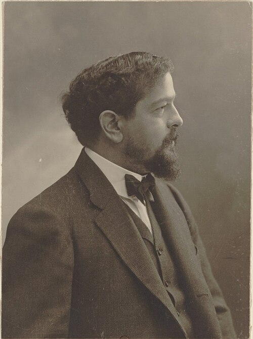
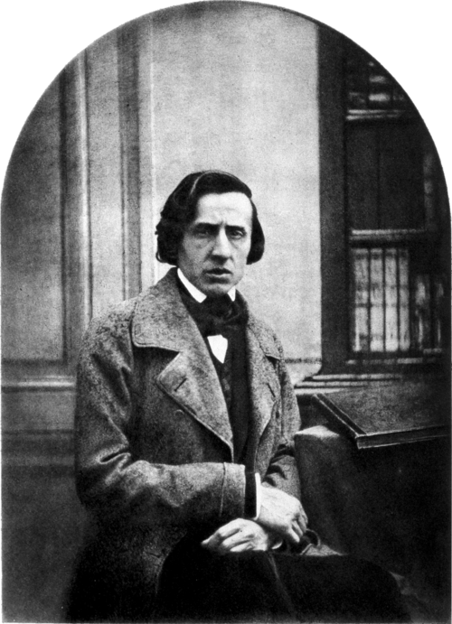

Xian Xinghai
셴싱하이 · 冼星海 · 1905–1945
프랑스 유학 뒤 중국으로 돌아와 활동한 작곡가. 중일전쟁 중 옌안에서 작곡한 《황하대합창》이 이번 프로그램의 마지막 곡 〈보위황하〉의 바탕.
- 1939.3 · 《황하대합창》 원곡 · 셴싱하이 33세
- 공연 프로그램 · 〈보위황하〉 피아노 편곡

溯根而行
뿌리를 거슬러 걷다 · Sound of Laurel
시간은 참고 연주의 대략적인 길이 · 나이는 표기한 작곡·개작·출판 시점의 만 나이
공연 안내의 여섯 주제·열두 곡 · 영상은 작품별 참고 연주
셴싱하이 · 冼星海 · 1905–1945
프랑스 유학 뒤 중국으로 돌아와 활동한 작곡가. 중일전쟁 중 옌안에서 작곡한 《황하대합창》이 이번 프로그램의 마지막 곡 〈보위황하〉의 바탕.

중국 민요 〈모리화〉의 선율을 바탕으로 한 변주. 피아노의 음역과 화음이 넓어지는 전개.
CONTEXT오스트레일리아에서 활동하던 추왕화가 피아니스트 천웨이링의 위촉으로 작곡, 시드니에서 초연. 중국 민요 〈모리화〉를 현대의 연주회용 피아노 작품으로 발전시킨 사례. 저작권 보호 작품.
작곡·판본 자료 ↗라흐마니노프가 자신의 가곡 〈라일락〉을 편곡한 피아노 독주곡. 조용한 선율과 흐르는 반주가 감상 포인트.
CONTEXT결혼한 해인 1902년의 가곡집 Op.21은 신혼여행 중 루체른에서 완성. 피아노 편곡은 러시아를 떠나기 전인 1914년에 출판, 미국 생활기인 1941년에 일부 수정. 원래의 노래를 작곡가 자신의 피아노 레퍼토리로 이어간 작품. 선전 공연의 판본은 미확인.
작곡·판본 자료 ↗신장 지역 음악을 바탕으로 한 피아노곡. 빠른 리듬과 장식적인 선율이 중심.
CONTEXT중국에서 작곡·교육 활동을 하던 1978년의 작품. 신장 지역의 민족음악을 피아노 독주곡으로 구성해, 중국 지역 음악과 서양 건반악기의 표현을 연결한 사례. 저작권 보호 작품.
작곡·판본 자료 ↗바르토크가 수집한 민속 선율을 엮은 여섯 개의 짧은 춤곡. 곡마다 다른 박자와 움직임이 감상 포인트.
CONTEXT직접 채집한 트란실바니아 지역의 민속 선율을 바탕으로 만든 피아노 모음곡. 민속음악 연구와 작곡을 함께 이어가던 바르토크의 작업을 보여주는 작품. 1917년에는 관현악판으로도 편곡.
작곡·판본 자료 ↗왕젠중이 중국 전통 쒀나 곡 〈백조조봉〉을 편곡한 피아노곡. 빠른 장식음과 음색 변화로 표현되는 여러 새의 울음소리.
CONTEXT왕젠중이 1973년에 중국 전통 쒀나의 레퍼토리를 피아노 독주곡으로 편곡. 전통악기의 장식음과 울음소리를 건반에서 재현하며 중국 피아노 편곡 레퍼토리를 넓힌 사례. 편곡의 저작권은 전통 원선율과 별도.
작곡·판본 자료 ↗관현악의 두터운 화음과 복잡한 리듬을 피아노 한 대로 표현하는 편곡. 악마의 춤에서 자장가를 거쳐 피날레로 이어지는 세 장면의 대비.
CONTEXT젊은 스트라빈스키가 디아길레프의 발레뤼스 위촉으로 작곡한 발레에서 출발. 1910년 파리 초연으로 국제적인 주목을 받은 작품. 아고스티가 1928년 악마의 춤·자장가·피날레를 피아노 독주로 편곡. 원곡과 편곡의 권리는 별도 확인 대상.
작곡·판본 자료 ↗황정역이 《시경》의 〈겸가〉를 바탕으로 직접 작곡한 피아노곡. 물가 저편의 사람을 그리는 시의 정서를 음악으로 표현한 작품.
CONTEXT연주자가 중국 고전시 《시경·진풍》의 〈겸가〉를 바탕으로 직접 만든 피아노 작품. 전통 시의 정서를 현대 피아노 독주곡으로 연결한 시도. 공개 공연 안내에는 작곡 연도가 없어, 개인적 작곡 상황과 나이는 확정하지 않음. 저작권 보호 작품.
작곡·판본 자료 ↗리스트가 자신의 가곡을 편곡한 피아노 독주곡. 조용히 시작한 선율이 큰 고조를 거쳐 돌아오는 구성.
CONTEXT바이마르에 정착해 작곡과 지휘에 집중하던 시기의 피아노판. 리스트의 가곡을 바탕으로 한 세 곡의 녹턴이며, 성악판과 피아노판이 1850년에 함께 출판. 같은 노래가 가곡과 독주회 레퍼토리로 모두 이어진 사례.
작곡·판본 자료 ↗중국에서 널리 알려진 〈채운추월〉의 선율을 피아노로 옮긴 작품. 유려한 선율과 여백 있는 흐름이 감상 포인트.
CONTEXT런광이 중국 기악곡으로 발표한 1935년의 선율을 후대에 피아노로 옮긴 작품. 티켓 안내에는 런광만 표기되어 실제 피아노 편곡자와 판본은 미확인. 원곡 작곡자의 시기·나이와 후대 편곡의 시기·나이를 구분해 기록.
작곡·판본 자료 ↗
드뷔시 《베르가마스크 모음곡》의 제3곡. 잔잔한 시작과 중간부에서 넓어지는 화음, 다시 조용해지는 끝부분의 대비.
CONTEXT로마 유학 뒤 파리로 돌아온 드뷔시의 초기 작품으로, 교정쇄에 표기한 작곡 연도는 1890년. 자신의 작곡 양식이 크게 달라진 뒤인 1905년에 《베르가마스크 모음곡》의 일부로 출판. 전통적인 초기 화성 안에서 후대 드뷔시의 음색과 선율 처리 방향을 보여주는 곡.
작곡·판본 자료 ↗
쇼팽의 네 피아노 발라드 중 첫 번째 작품. 서정적인 부분과 격렬한 부분의 교차, 마지막으로 갈수록 높아지는 긴장.
CONTEXT폴란드를 떠나 파리에 정착한 쇼팽의 1830년대 작품. 정확한 착수 시점은 불명확하며 1830년대 중반에 완성. 문학·성악에서 쓰이던 ‘발라드’라는 이름을 독립된 피아노 작품에 적용하고, 서정과 극적인 전개를 큰 단악장 안에 구성한 사례.
작곡·판본 자료 ↗셴싱하이의 《황하대합창》 중 〈보위황하〉를 바탕으로 한 피아노 편곡. 반복되는 강한 리듬과 두터운 화음에서 나오는 추진력.
CONTEXT프랑스 유학을 마치고 중국으로 돌아온 셴싱하이가 중일전쟁 중 옌안에서 작곡한 《황하대합창》의 한 부분. 공동체 의식과 저항을 담은 중국 합창 레퍼토리에서 출발. 선전 공연의 피아노 편곡자·판본은 미확인으로, 후대 《황하 협주곡》의 시간과 혼동하지 않음.
작곡·판본 자료 ↗with NJ Kim, P Yi, AS Yi, JI Jang, JH Lee
학회 참석차 방문한 선전에서, 함께 간 제자들과 찾은 공연.
시민들이 편하게 찾는 공연장 같았던 분위기. 객석에서 많이 보였던 어린이 관객들.
인상 깊었던 황정역의 기교. 중국 작곡가와 서양 작곡가의 피아노곡을 한 무대에서 만난 공연.
꽃·춤·새·사랑·달·서사라는 여섯 주제 아래 중국 작품과 서양 작품을 한 곡씩 짝지은 인상적인 구성.
서양 작품보다 중국 작품에 더 열광하는 듯했던 객석. 음악과 함께 기억에 남은 시민들의 반응.
함께 간 제자들도 매우 만족했던 공연. 선전 학회에서 남긴 또 하나의 추억.